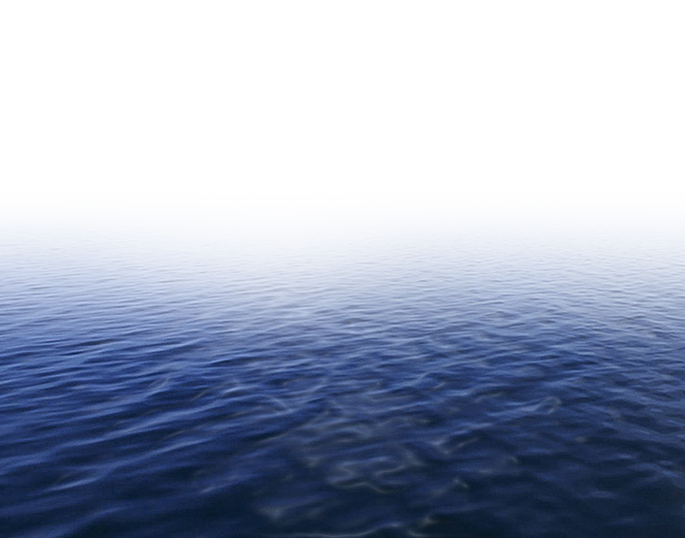
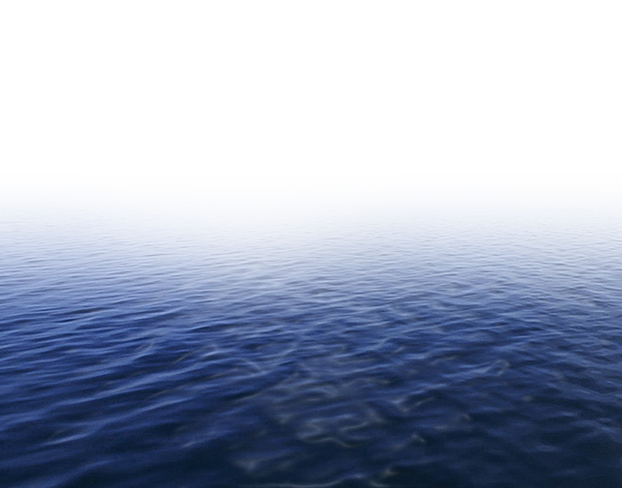
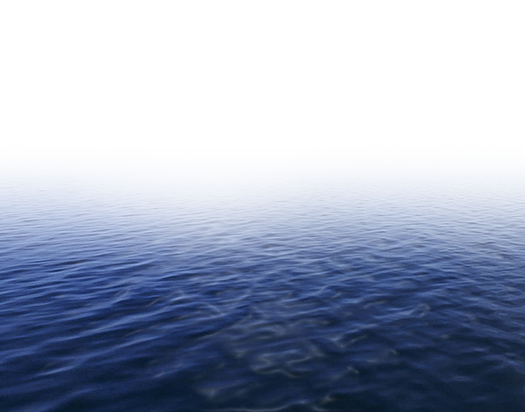
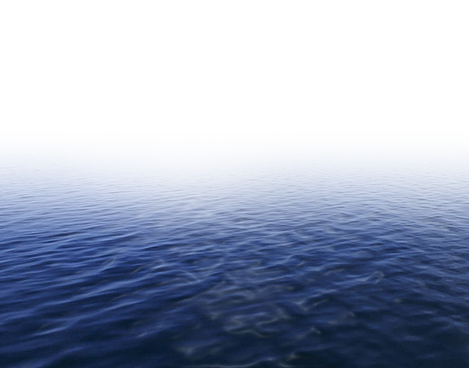

Nature
 

Nature's artistry unfolds in a symphony of sights, sounds, and sensations. Stand beneath a canopy of ancient trees, sunlight filtering through leaves like dappled gold. Breathe in the crisp air, tinged with the sweet scent of wildflowers or the salty tang of the ocean. Listen to the wind rustling through leaves, the gentle murmur of a stream, or the melodic chorus of birdsong. Watch the fiery dance of a sunrise, the soft glow of a moonlit landscape, or the mesmerizing swirl of storm clouds. From the delicate veins of a butterfly's wing to the majestic sweep of a mountain range, each detail speaks of an intricate balance, a timeless dance of creation and renewal. Witness the vibrant explosion of life in a spring meadow, the fiery embrace of autumn leaves, the stark elegance of a snow-covered forest. Every season paints a unique masterpiece, each element woven into a tapestry of breathtaking beauty. Nature's power can both awe and inspire. Feel the spray of an ocean wave on your skin, the thrill of wind whipping through your hair as you climb a mountain peak, the serenity of gazing at a star-studded sky. It's a reminder of our place in the grand scheme of things, a humbling call to appreciate the delicate balance that sustains us all. So, step outside, open your senses, and let the beauty of nature wash over you. In its vastness and detail, there's a profound peace, a wellspring of creativity, and a connection to something much larger than ourselves.